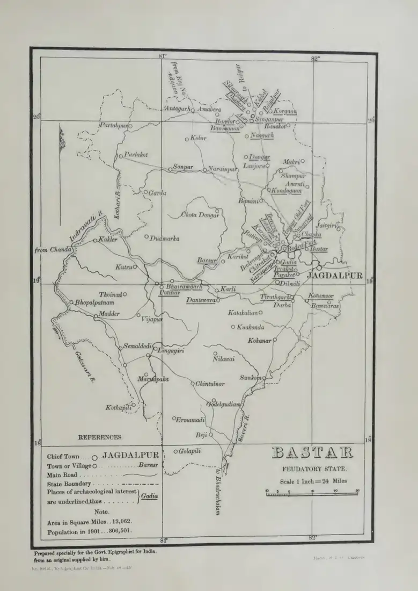

Inscriptions from Bastar State
INSCRIPTIONS FROM THE BASTAR STATE.
BY HIRA LAL, B.A., M.R.A.S., NAGPUR.
Mr. Cousens in the Annual Report of the Archæological Survey of India, 1903-04 (p. 54) opens his report on the conservation of antiquarian remains in the Central Provinces with the remarks that ' the Central Provinces and Berâr cannot be said to be rich in antiquarian remains,' but ' possibly there exists many an old relic of considerable interest lying hidden away in some of the extensive jungles and little known tracts in the province, that has not come under the notice of any one capable of estimating its value.' Exactly from such a place do I draw the materials for the subject I propose to notice on.
Bastar is a feudatory state in the extreme south of the province situated between and north latitude and and east longitude, touching the Gôdâvarî and comprising an area of 13,000 square miles, all covered with dense forests and populated by the wildest tribes, some of whom did not till very recently know the use of clothes. This extensive jungle has been made to yield no less than 22 inscriptions1 through the strenuous efforts of my friend Mr. Baijnath, B.A., Superintendent of the Bastar State. Three of these inscriptions were noticed by Colonel Glasfurd, Deputy Commissioner of the then Upper Gôdâvarî District, about the year 1862 A.D.2 So far as is known, only one of them has been published, viz., the so-called Nâgpur Museum inscription of Sômêsvara.3 On the authority of the information supplied by the Curator of the Nâgpur Museum it is there stated that the stone was brought from a village, Kowtah, near Sironcha, which is incorrect as will presently be shown. It belonged to Bârsûr, of the Bastar State, and is an important record of the predecessors of the present line of Râjas.
In order that the references to places in the Bastar inscriptions may be easily understood, I append a map of the State showing their positions as also some other places possessing archæological remains. As most of the latter have never been noticed before, a brief mention of at least some of the important ones may not be out of place here. These places are Bârsûr, Dantêwârâ, Gaçia, Bhairamgarh, Narâyanpâl, Sunârpâl, Kuruspâl, Tirathgarh, Potinâr, Chapkâ and Dôngar.
Bârsûr is a place of very great interest. It is 55 miles west of Jagdalpur, the present capital of Bastar. It contains ruins of many temples, the most important of which is a Śiva temple with two sanctuaries having a common manđapa supported on 32 pillars in four rows. In each of the sanctuaries there is a liñga and a Nandi, and old people remember that an inscription was removed from this place about half a century ago. Another Śiva temple has a manđapa with 12 pillars in three rows, and the third is called Mômâ bhâñjá-kâ mandir and is distinguished by carvings on the inside walls in the shape of bells suspended from chains. Outside the Ganêsa temple there is a huge figure of Ganêsa, in circumference and about or high. Numerous images are lying about or collected together under huts, of which the most noticeable is one of Vishnu, high, and showing good workmanship. There are also some images of Mahishâsuramardinî, one of which is inscribed. All the temples are of mediæval Brâhmanic style, most of them built of stone without lime.—Dantêwârâ is about 20 miles south of Bârsûr, and in the intervening villages there are sculptured stones lying about, some of them being five-hooded cobras or intercoiled snakes. Dantêwârâ contains the shrine of Dantêsvarî, the tutelary goddess of the present ruling family. The temple is built at the junction of two rivers
1 Since I wrote this Mr. Baijnath has made further discoveries which will be described in another paper.
2 See Selections from the Records of the Government of India in the Foreign Department, No. XXXIX. p. 62 et syq.
3 Above, Vol. III. p. 314.
Plate 1 is bound after this page.
called Sañkhinî and Dañkinî, and is notorious as a place where human sacrifices were formerly annually offered. At least a place was pointed out to me in the innermost sanctum, close to the goddess, where they said the victims used to be decapitated. The goddess has eight arms and is represented in the act of killing the buffalo demon. She is in reality Mahishâsuramardinî, locally known as Dantêsvarî. There are various other images such as those of Vishpu, Kârttikêya, Ganêsa, etc., some of which were brought away from the ruins of Bârsûr. There are five inscriptions here, three inside the Dantêsvarî temple, one just outside it, and another near a mud hut called Bhairamgudî. There are remains of several other temples buried in ruins. For the support of the Dantêsvarî temple, an estate consisting of several villages is attached.—Bhairamgarh is about 70 miles west of Jagdalpur and has three or four temples, together with remains of a fort and a ditch and several tanks. There is an inscription on a pillar, and at Potinâr, a village near Bhairamgarh, there is a slab1 inscribed on four sides.—Gađia is 20 miles west of Jagdalpur and has a stone temple with no idol, but built in the same style as those of Bârsûr. About 400 yards away there is a big inscription, and a linga was found buried in a brick mound.—Narâyanpâl and Kuruspâl are quite close to each other, the former being situated on the river Indrâvatî. Near these villages are the forts of Râjapur and Bodrâ, and not far away the beautiful falls of the Indrâvatî at Chitrakût present a magnificent appearance.—Narâyanpâl is only 6 miles from Gađia and has an old temple, an image of Vishpu, and an inscription.—Sunârpâl and Chapkâ are within 12 miles from Narâyanpâl. Chapkâ has a number of satî pillars, several of which are inscribed.—Tirathgarh also contains some temples and relics.—Dôngar is a place where according to custom the present Râjas go to be crowned. Here one of the queens, whose finger was chopped off by royal order and who ventured to inform her father, writing the letter with the blood so wantonly spilt, was buried alive. The pit, which is still pointed out, was once disturbed by a greedy Râja of the same family, who also brought down the temple of Narâyanpâl and some others in search of supposed buried treasure.
I now proceed to give a short notice of each inscription of which I possess impressions, with very brief remarks where necessary, reserving a fuller account for other papers. The Bastar inscriptions may be roughly divided into three classes, viz., those of the (1) Nâgavamśî kings, (2) the Kâkatîyas, and (3) miscellaneous. Of 22 yet discovered, ten belong to the 1st class, five to the 2nd, and the rest to the 3rd.
THE NÂGAVAMŚÎ INSCRIPTIONS.
I.—Narâyanpâl Stone inscription of Queen Guṇḍa-mahâdêvi, the mother of Sômêsvaradêva.
Narâyanpâl is a village 23 miles west of Jagdalpur. The inscription is on a stone slab and is in Nâgarî characters, and the language is Sanskrit. It records the grant of the village Nârâyaṇapura to the god Nârâyaṇa and some land near the Khajjuri tank to the god Lôkêsvara, and it is dated in the Śaka year 1033 on Wednesday, the full moon-day of the Kârttika month in the Khara sainvatsara (Śaka-nripa-kâlâtitê duṣa-ṣata-traya[**]-triṁś-âdhikê Khara-sainvatsarê Kârttika-paurṇimâsyâm Budhavârê) corresponding to 18th October 1111 A.D., and issued by Guṇḍa-mahâdêvi, the chief queen of Mahârâja Dhârâvarsha, the mother of Sômêsvaradêva and the grandmother of Kanharadêva, who was then ruling on the death of his father (Mahârâja-Sômêsvara-dêvasya śvar(svar)gatê têshâm putrasya âsâm naptuḥ . . . śrimad-vira-Kanharadêvasya kalyâṇa-vijaya-râjyê). The dynasty claims to belong to the Nâgavamśa and the Kâśyapa gôtra, to have a tiger with a calf as their crest and to be the lords of Bhôgâvatî the best of the cities (Nâgavamśôdbhava Bhôgâvati-pura-var-êsvara savatsa-vyâghra-lâmchhana Kâś(s)yapa-gôtra). At the end of the inscription the sun and moon, a cow and a calf, and a
1 This has now been removed to a roadside place called Jânglâ, six miles north of Potinâr, for easy access.
dagger and shield with a linga in its socket, exactly of the shape in which the Lingâyats wear them, are engraved. There is a postscript to this inscription in which it is stated that the land was given by Dhâraṇa-mahâdêvî, who was probably the widow of Sômêsvara, as will appear further on. There can be no doubt that Narâyanpâl is the Nârâyanapura of the inscription. A temple of Nârâyana is still standing there. The image of Vishnu, about 2' high, canopied by a hooded snake, is exquisitely executed.
II.—Bârsûr inscription of Gaṅga-mahâdêvî, wife of Sômêsvaradêva.
This inscription is now in the Nâgpur Museum, and, as stated above, it has already been published.1 It is a slab 9' 2' long, 14" broad and 3½" thick, broken into two pieces, the bigger one measuring 6¼' and the smaller one 2' 11". It is inscribed on three sides. The inscribed portion of each flat side is about 4½', thus leaving half of the pillar buried underground. As the whole of the inscription could not be completed within the allotted space, the remaining portion has been inscribed on the third side, on which the writing runs to the length of 31". The stone is stated to have been brought from Kowtah near Sironcha, but the Tahsildar of Sironcha informs me that it was never sent from that place.2
The stone is indisputably from Bârsûr. Happily Col. Glasfurd has given a facsimile in his report on the Dependency of Bastar. Speaking of the Bârsûr temples he says3:—“In front of this temple I found a slab with an ancient Sanskrit and Telugu inscription on both sides; part of it had been broken off and was nowhere to be found. After offering a reward and causing search to be made I had the satisfaction of obtaining it. As the Telugu is of an antiquated character, I regret to say I have not succeeded in obtaining an accurate translation of the inscription. A facsimile is appended. From what I can ascertain it would appear that the temple of Mahâdêva where the slab was found was built by a Râjâ Sômêsvaradêva, a Nâgavamśî Kshatriya, in the year 1130.”
The inscription is in the Telugu character, and the language is also Telugu prose, the birudâvali or titles of the king being in Sanskrit and corresponding with those in the Narâyanpâl Sanskrit inscription. It records that Gaṅga-mahâdêvî, the chief queen of Sômêsvaradêva gave a village named Kêramaṛuka or Kêramarka to two temples of Śiva (both of which she had built) on Sunday, the 12th tithi of the bright fortnight of Phâlguna in the Śaka year 1130. The two temples referred to here still exist, having one common maṇḍapa, and from local enquiry it appears that it was from this place that Col. Glasfurd removed the slab. Although the names of the temples Virasômêsvara and Gaṅgâdharêsvara given after the royal couple as recorded in the grant, are forgotten, a tank still remains which is called Gaṅgâsâgar and retains the memory of the charitable queen Gaṅga-mahâdêvî. If the Sômêsvara of this inscription is identical with that of Narâyanpâl, there has apparently been a mistake in engraving the date which should be 1030 and not 1130, and that is perhaps the reason why the week day does not correspond with the tithi given there, viz., the 12th of the bright fortnight of Phâlguna, on a Sunday. According to Mr. Dîkshit's calculations, Phâlguna Śukla 12 of Śaka-Samvat 1130 ended on Wednesday. So it was concluded that the year meant was Śaka 1131 expired, in which year the tithi given in the inscription fell on a Sunday. But on calculating the week day for the same tithi in Śaka 1030 expired I find that
1 Above, Vol. III. p. 314.
2 A similar error seems to have been committed in relegating the Buddhist stone inscription of Bhavadêva (republished in J. R. A. S. 1905, p. 617, by Dr. Kielhorn) to Ratanpur, whereas from my enquiry in situ I found that the inscription was really brought from Bhândaka, and this is confirmed by General Cunningham, Reports, Vol. IX, p. 127.
3 Report on the Dependency of Bastar, 1862, p. 62.
it also fell on Sunday.1 In the Narâyanpâl inscription it is stated that the grant of Nârâyanapura was made in Śaka 1033, in the reign of Kanharadêva, who had succeeded his father Sômêśvaradêva on his death. And as there is nothing to show at present that there were two Sômêśvaras,2 the date 1030 fits in very well. It, however, seems somewhat extraordinary that such a palpable mistake should have been allowed to remain when it could be corrected by joining together with a curved line the two ends of the Telugu 1 which is like an egg half-cut (at least it is so in the inscription) thus transforming easily the second 1 of 1130 into a zero. I am very reluctant to suppose that the engraver committed a mistake, but that he did is patent enough in this case whether we read 1030 or 1130. The village Kêramaruka may be identified with Kôdmalnâr, which is situated quite close to Bârsûr and is said to have been mu'afi or exempt from the payment of taxes for a long time.
III.—Kuruspâl inscription of Dhâraṇa-mahâdêvi, second queen(?) of Sômêśvara.
Kuruspâl is a village about a mile off from Narâyanpâl. The inscription was found built upside down into the steps of a small tank, which shows that it did not belong to the tank itself, but was brought away from some ruins, possibly the temple built in the centre of the tank, and was utilised without regard to what was engraved on it. It is in the Nâgarî character, the language being Sanskrit with very bad spellings. The object of the inscription is to record a grant of land situated near Kalamba by Dhâraṇa-mahâdêvi, who seems to have been the second queen of Sômêśvaradêva. The inscription belongs to the victorious reign of Mahârâjâdhirâja Sômêśvaradêva (Mahârâjâdhirâja-Śrî-Sômêśvaradêva-pâdînu kalyâna-vijaya-râjyê . . . śrîmat-sâ(mach-chhâ)sana-mahâdêvi dvitiya Dhâraṇa-mahâdêvi tay=âchamya Kalammva-samîpasthâ bhûmî dattam(â)). The same long birudas as in the Narâyanpâl and Bârsûr inscriptions are attached to Sômêśvaradêva's name. The inscription also mentions the name of Nârâyanapura. It is dated in the Saumya samvatsara.
IV.—Sunârpâl stone inscription of Mahâdêvi, queen of Jayasimhadêva.
Sunârpâl is about 10 miles from Narâyanpâl. The stone is partially broken, and a part of the inscription is gone. It is undated. It records the grant of land, or, more properly, an imprecation against the resumption of granted land, and gives the names of witnesses before whom the gift was made, but it is not stated where. The gift was apparently made by Mahâdêvi, the chief queen of Jayasimhadêva of the Nâga race, the supreme lord of Bhôgâvatî, having the tiger with a calf as his crest. He is called Râjâdhirâja Mahârâja Śrî Jayasimhadêva.
V.—The Dantêśvarî guđî inscription3 of Narasimhadêva.
This is another stone inscription in Telugu character found in the temple of the goddess Dantêśvarî at Dantêwârâ. It is dated in the dark fortnight of the month Jyêshtha in the Śaka year 1140 (expired). In this year there was an eclipse of the sun, and the month of Jyêshtha was intercalary. At that time Mahârâja Narasimhadêva, the ornament of the race of the best of serpents, was ruling (Śrî-bhujaga-vara-bhûshaṇa-Mahârâjul=aina Śrîman-Narasimhadêva-Mahârâjula râjyamu). The inscription is only a fragment.
1 Since I wrote the above, Prof. Kielhorn has kindly calculated the date for me and finds that Śaka 1030 Phâlguna Sudi 12 Sunday regularly corresponds to Sunday, 14th Feb. A.D. 1109.
2 I do not think that much importance can be attached to the different birudas used in the Bârsûr anu Narâyanpâl inscriptions. The Sômêśvara of the former has the title jagadêkabhûshana-mahârâja, which does not occur in the latter. But then the birudas used in the Bastar inscriptions are not always the same.
3 For reading this I am indebted to Mr. Sitaramayya, one of the Superintendents in the Comptroller's office, Central Provinces.
Of the remaining five Nâgavamśi inscriptions it has not yet been possible to obtain good impressions. They are all in Telugu. The Potinâr slab seems to refer to Narasimhadêva and the Dantêwârâ stone lying outside the Dantêsvarî temple to Jayasimhadêva. The Bhairamgarh inscription contains birudas similar to those found in the Bârsûr one, and the king is stated in both to be the worshipper of Mânikyadêvî (Śrî-Mânikyadêvi-divya-śrîpâda-padm-ârâdhaka), which is an older name of Dantêsvarî, so named by the successors of the Nâgavamśis, the Kâkatiyas, although the latter claim that Dantêsvarî came with them from Warangal, where she was called Mânikyêsvarî.1 This inscription is incomplete and it appears that it was never completed. The Bhairamguđi inscription at Dantêwârâ appears to be the oldest of all, as its date appears to be Śaka 984.2 The Gađia inscription, apparently of Somêsvaradêva's time, contains the usual figures of the cow and calf, Sun and Moon, Śiva, etc., the peculiar signs of the Nâgavamśi kings, although they do not seem to refer to their family crests. They are all picture imprecations. The sun and moon represent that the grant is to last as long as these luminaries endure. Śiva is the protector against violation of the grant on the spiritual side, and the dagger and shield of the king on the temporal. The cow and calf depict the grave sin which the transgressor would commit, exactly equal to taking away the cow from the calf. This interpretation is supported by the fact that the Kuruspâl inscription has a representation of an ass associating with a pig, the imprecation being explained in the text thus, Jô (yô) anyathâ karôti tasya pîtâ gardabhaḥ śûkarî mâtâ (he who acts otherwise has for his father an ass and for his mother a pig.)
From these inscriptions it would appear that Bastar, which has been held to have always been the home of wild animals, with almost wilder tribes, was once ruled by a people whose civilization is sufficiently evidenced by the remains of temples, some of which are of great architectural beauty. These inscriptions carry the history of Bastar back to the eleventh century A.D., when at least the central portion of the State was ruled by the Nâgavamśi kings. They apparently belonged to the Sinda family of Yelburga, whose titles are strikingly identical with those of the Bastar Nâgavamśi kings. Dr. Fleet states3 that there appear to have been more branches than one of this family. One of these was that of Bastar, which has been hitherto unknown. These inscriptions disclose the names of five or six different kings, viz., Dhârâvarsha, his son Sômêsvaradêva, and his grandson Kanharadêva, Jayasimhadêva, Narasimhadêva, and a possible Sômêsvara II. In view of the fact that half the inscriptions relating to these kings have not yet been deciphered owing to their incompleteness or want of proper impressions, I reserve a fuller discussion of the history of these kings for another occasion.
II.—THE KÂKATIYA INSCRIPTIONS.
All these are modern ones, the oldest being those of the Dantêsvarî temple at Dantêwârâ written by the râjaguru of the present family, who was a Maithila Pançit. One of these is in Sanskrit and the other is a Maithili rendering of the same with some additions. Col. Glasfurd has given a very defective transcript of both in his report. They are dated in the Vikrama Samvat 1760, or 1703 A.D. on the 3rd day of Baisâkh, dark fortnight. They record the pilgrimage of Râja Dikpâladêva to the Dantêsvarî shrine when 'so many thousands of buffaloes and goats were sacrificed that the waters of the Sankhinî river became red like kusuma flowers and remained so for five days.' The Kâkatiyas are stated to be Sômavamśis,4 born of the
1 Elliot's Report on the Bastar and Kharonde Dependencies, 1861, p. 13.
2 As read by Rai Bahadur V. Venkayya.
3 Gazetteer of the Bombay Presidency, Vol. I, Part II, p. 572.
4 In the Ekâmranâtha inscription of Gaṇapati (Ind. Ant. Vol. XXI, p. 200) they are stated to belong to the solar race to which 'Sagara, Bhagiratha, Raghu and Râma' belonged. This apparent contradiction is, however, capable of being explained. The Kâkatiya king Gaṇapati had no male issue. He had a daughter named Rudrâmbâ, who succeeded him on the throne. Apparently she also had no male issue and had therefore to adopt her daughter's
Pândava Arjuna. The genealogy begins with Kâkatî Pratâparudra, who was king of Warangal. His brother Annamrâja was the first to come to Bastar, and the genealogy is continued to Dikpâladêva, nine successors being mentioned. The present Bastar family is the representative of the old Warangal family, who, having been defeated by Musalmâns, fled to Bastar. Combining the information hitherto available, the following list of Kâkatîya kings may be made up.
1.—Predecessors of Annamdêva, from Professor Kielhorn's Southern List, above, Vol. VIII, Appendix, p. 18.
- 1 Durjaya.
- 2 Bêta (Betmarâja) Tribhuvanamalla, son of 1.
- 3 Prôla (Prôlêrâja, Prôðarâja) Jagatikêsarin, son of 2; made the Western Châlukya Tailapadêva prisoner; defeated Gôvindarâja and Gunda of Mantrakûta; conquered but reinstated Chôðôdaya; put to flight Jagaddêva.
- 4 The Mahâmançalêsvara Rudradêva, son of 3; subdued Đomma; conquered Maîligidêva; burnt the city of Chôðôdaya. A.D. 1163 [and 1186].
- 5 Mahâdêva (Mâdhava), brother of 4.
- 6 Ganapati (Ganapa) Chhalamattiganda, son of 5; defeated the Dêvagiri Yâdava Singhana, the kings of Chôla, etc. A. D. [1199-1200 to 1260-61].
- 7 the Mahâmançalachakravartin Pratâparudra of Ékašilânagarî, i.e. Warangal. His general Muppiđi entered Kâñchî and installed Mânavîra as governor. A.D. 1316.
2.—Successors of Annamdêva down to Dikpâladêva according to the Dantêwârâ inscriptions.
- 1 Annamrâja, brother of Pratâparudra.
- 2 Hâmiradêva.
- 3 Bhairava (Bhai Râj) dêva.
- 4 Purushôttamadêva.
- 5 Jayasimhadêva.
- 6 Narasimhadêva; his queen Lachhamî-dêi dug many tanks and planted gardens.
- 7 Jagadîšarâyadêva.
- 8 Vîranârâyanadêva.
- 9 Vîrasimhadêva, married Vadanakumârî, a Chandella princess.
- 10 Dikpâladêva, married Ajabakumârî, of the Chandellas, visited the Dantêsvarî temple in Samvat 1760, A.D. 1703.
son Pratâparudra. It is possible that Pratâparudra's father may have belonged to the lunar race, and, while Pratâparudra became by adoption a Kâkatiy, of the solar race, his brother Annamdêva, the founder of the Bastar family, must have remained what his father was, that is, of the lunar race. Strictly speaking Pratâparudra himself does not seem to have a very strong claim to be a solar Kâkatiya. He was adopted by his grandmother, whereby he became a member of her (i.e. of her husband's) race, but it can be urged in his favour that he succeeded to the Kâkatiya chrone, and that adoption of females was valid in ancient times (see Dattakammânsd VII § 30-38 as quoted by Mayne, Hindu Law and Usage, sixth edition, p. 130), whereby Ganapati's daughter, whom her father had called his 'son' and had given a male name of 'Rudra' (on which account she was called Rudrâmba; see Ind. Ant. XXI. p. 199) became incorporated with her parental race of solar Kâkatiyas. The commentator of the Pratâparudriya, who was no less a personage than the great Mallinâtha's son, explains the word thus:—Kâkatir nâma Durgâ Śaktir Ékašilânagar-êevarânâm kuladêvatâ sâ Śaktir bhajanty-āsy-êti Kâkattyah. It is in this sense alone that the Bastar family could be classed as Kâkatiya. This would not affect their true lineage, viz., the lunar race. All this however would apply if Annamdêva was a brother of the Pratâparudra of our list I. But list II with 10 kings for a period of about 400 years postulates the existence of another Pratâparudra, who probably ruled a hundred years later and 'lost his kingdom and his life in the battle with Ahmad Shâh Bahmani' in 1424 A.D. This Pratâparudra was also probably engrafted from another family like his predecessor, in all likelihood from the lunar race to which his brother Annamdêva as a matter of natural course continued to belong.
3.—Successors of Dikpáladėva down to the present ruling chief, according to records kept in the Râja's family.
- 1 Rajpáldėva.
- 2 Dalpatdėva.
- 3 Daryâodėva; his brother Ajmêr Singh rebelled against him in Samvat 1836, A.D. 1779.
- 4 Mahîpáladėva.
- 5 Bhûpáladėva.
- 6 Bhairamadėva.
- 7 Rudrapratâpadėva, the present chief.
The family records place another Pratâparâjadėva between Narasiñhadėva and Jagadîsarâyadėva, Nos. 6 and 7 of List 2. Pratâparudradėva, the brother of Annamrâja, is stated to have had three eyes; his army was composed of nine lac archers,1 and during his time golden rain fell. Pratâparudra I. was a great patron of learning, and Vidyânâtha wrote a work on Alankâra, which he called after him Pratâparudrayasôbhûshaṇa or Pratâparudrîya.2
The other three inscriptions are at Dôngar; they are written in Hindi. Two of them are dated in Samvat 1836, or A.D. 1783, and refer to a visit of Râja Daryâodėva in order to quell a local rebellion. The third is dated in Samvat 1928, or A.D. 1871, and records the patṭâbhishêka ceremony of Bhairamadėva, the father of the present ruler.
III.—MISCELLANEOUS INSCRIPTIONS.
All these are unimportant and give no historical data. Six belong to Chapkâ and are engraved on sati memorial stones and, with one exception, in Nâgarî characters. Most of these have the usual marks of the sun, the moon and the outstretched hand with figures of husband and wife. Some have got temples engraved, with the couple in the act of worshipping the liñya represented there. One is found at Bârsûr on the pedestal of a goddess and is fragmentary.
1 This may be true in the sense that he ruled over so big a population, who, as subjects, could at any time be called out for military service. In Bastar and adjoining tracts almost every man knows the use of the bow and arrow, with which they even kill tigers. The probability, however, is that 'nine lac' was a conventional term for the highest number. In the Hotṭûr inscription (Gazetteer of the Bombay Presidency, Vol. I, Part II, p. 433) the Châlukya king Satyâśraya is stated to have put to flight a Chôla king who had collected a force numbering nine lacs, indirectly insinuating that he defeated the biggest army that could be brought in the field. Similarly it has become idiomatic to speak of Bâwangarh (52 forts), 700 chêlas (disciples), 108 śrits, etc.
2 Ind. Ant. xxi. p. 198, and Duff's Chronology of India, p. 213.
